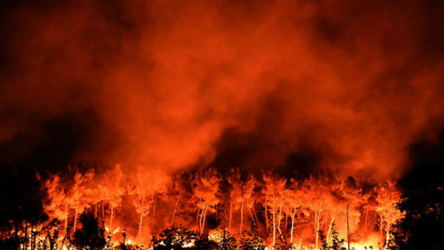

Statistiques des incendies en Corse
La Corse est une île méditerranéenne qui possède une grande diversité de paysages et de végétation. Parmi les richesses naturelles de la Corse, on trouve de nombreuses forêts, qui couvrent environ 40% du territoire. Ces forêts sont composées de différentes essences d’arbres, comme le chêne vert, le chêne liège, le pin maritime, le pin laricio, le hêtre, le châtaignier, etc. Chaque type de bois a ses propres caractéristiques, notamment en termes de combustibilité, de résistance au feu, de production de fumée, etc. Ces caractéristiques influencent le comportement des incendies, qui sont un risque majeur pour la Corse.
Graphiques
Graphique des commune et de leurs essences prédominantes
...Graphique des m2 brulés par commune en 2020
"Corte" : 31497 m2 ; "San Gavino" : 3031 m2 ; "Porto Vecchio" : 1532 m2 ; "Zonza" : 267 m2 ; "Palneca" : 150 m2 ; "Ghisoni" : 150 m2 ;"Saliceto" : 1 m2 ; "Zicavo" : 1 m2 ;
L'association
Furesta est une association à but non lucratif qui a pour mission de sensibiliser et d'informer le public sur les incendies de forêt en Corse. Furesta propose un site web qui présente les incendies en fonction du type de bois en Corse.

La Corse est l'une des régions les plus touchées par les incendies de forêt en France, avec plus de 2000 feux par an en moyenne, et plus de 10000 hectares brûlés
Les incendies de forêt ont des impacts négatifs sur la biodiversité, le paysage, la qualité de l'air, le climat, l'économie, et la santé humaine. Ils peuvent également entraîner des pertes de vies et de biens
La prévention des incendies de forêt repose sur plusieurs actions, comme le débroussaillement, la création de pare-feu, la surveillance, la sensibilisation, et la réglementation.
Le combat
La lutte contre les incendies de forêt mobilise des moyens humains et matériels importants, comme les pompiers, les bénévoles, les avions, les hélicoptères, etc...